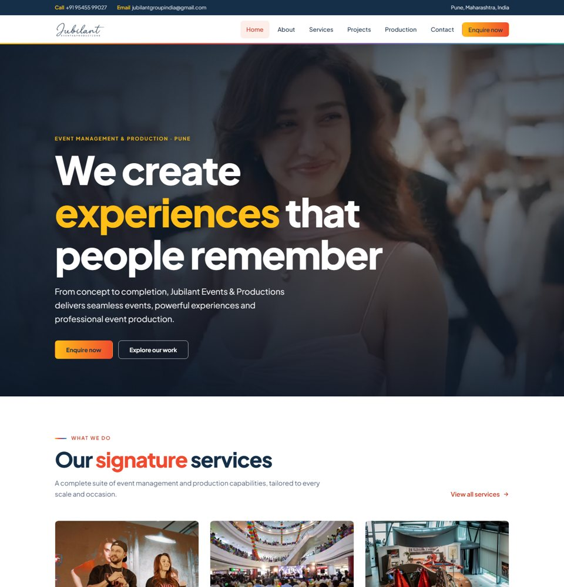
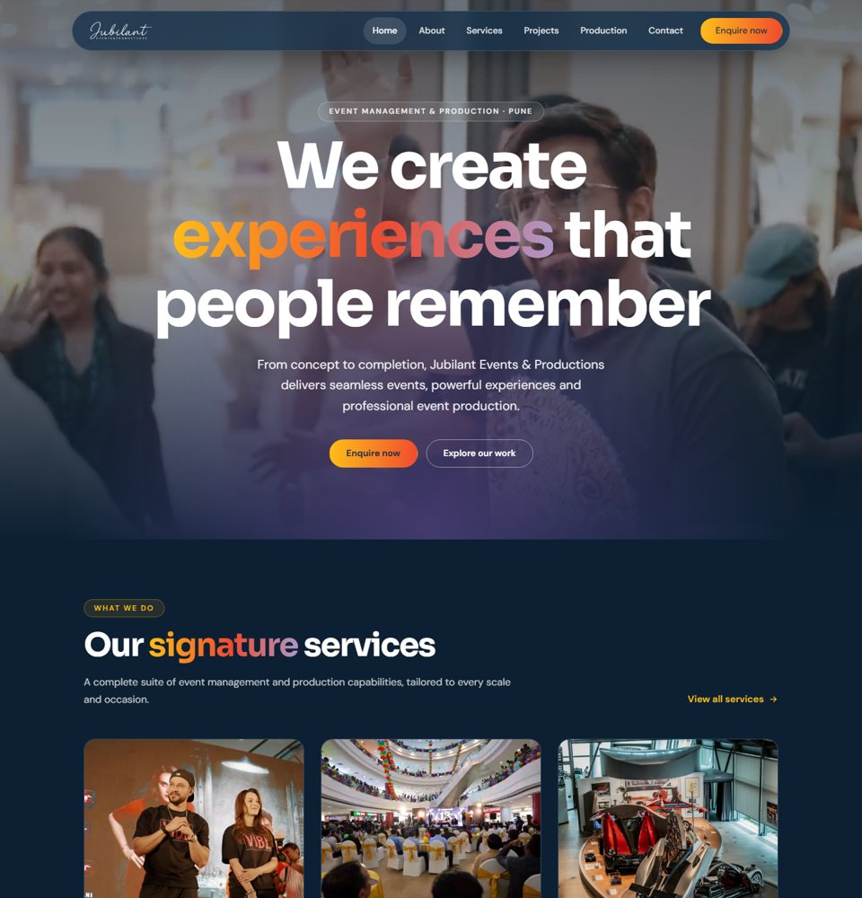
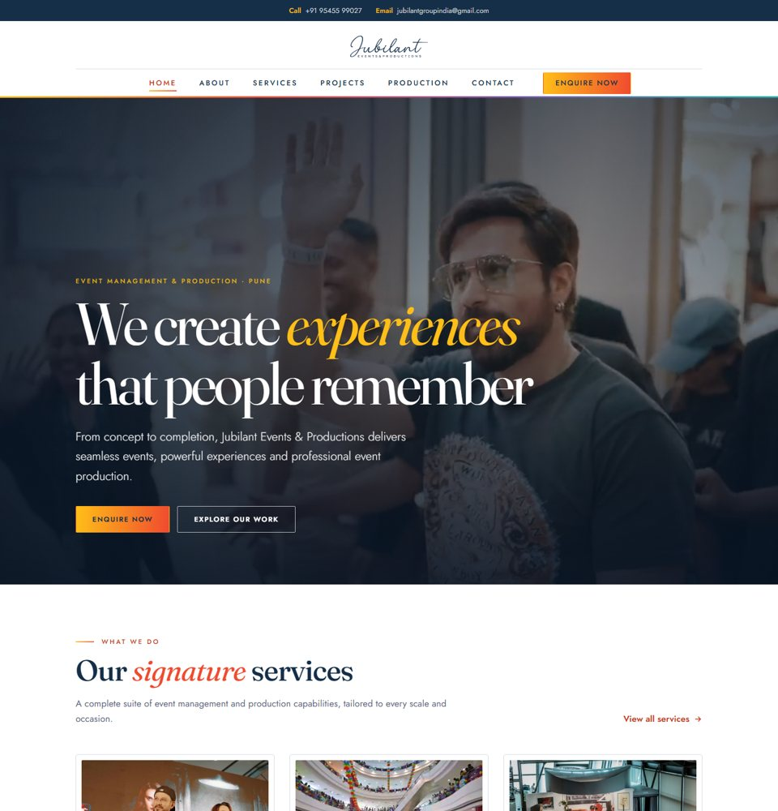

Website structure options
Same section order and page structure in all three, filled with the real Jubilant content and photos, in the Shaahi colour palette (navy, coral, saffron, purple and teal). Only the layout style and type change. Open any option and use its menu to browse all six pages.

Option KBoardroom
White and navy with the coral-to-saffron gradient buttons. Clean corporate look with a top contact bar and square-edged cards.

Option LStage
Deep navy showtime look with purple, coral and teal glows and a floating pill menu over the video.

Option MEditorial
White and navy with coral and saffron accents. Serif headlines, a centred masthead menu and framed photos.